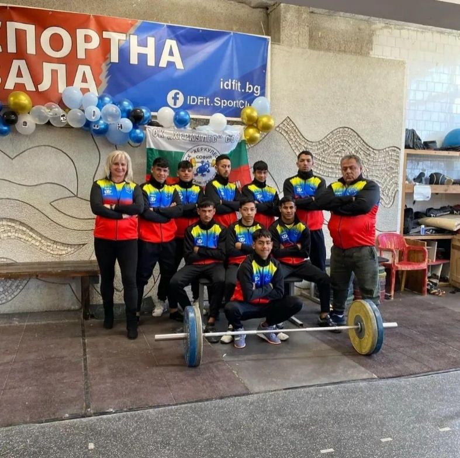
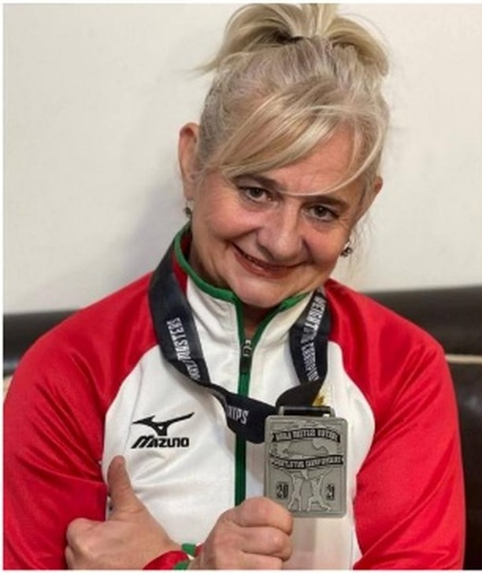
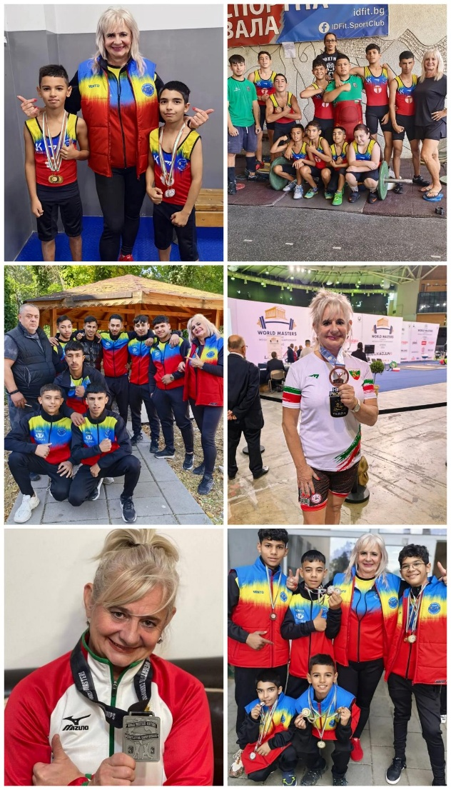

Благотворителен базар на 24 ноември, „Арсенал“ АД
Заповядайте на базара, за да си вземете домашен сладкиш или соленка.
12:00 – 12:45 ч. (в обедната почивка)
Покана към служителите
Всеки колега от завода, който има желание, може също да приготви и донесе кулинарен продукт на нашата маса в деня на базара. При желание ще ви очакваме с вашите изделия до 11:00 ч.
Благотворителна кампания
Подкрепа за
Спортен клуб
„Херкулес“
Заради дълбоката административна криза във федерацията по щанги легендарната треньорка Кристияна Колева вече 11 месеца не е получавала заплата, но отказва да изостави децата. Залата е пред реален риск да бъде запечатана. Можем да помогнем и да дадем бъдеще на тези шампиони.

11 месеца без заплата за треньорката
Безплатни тренировки за деца в неравностойно положение
Медали от републикански първенства
Какво се случва
Заради дълбоката административна криза във федерацията по щанги легендарната треньорка Кристияна Колева вече 11 месеца не е получавала заплата. Въпреки това тя отказва да изостави децата.
Вместо подкрепа, държавата изисква от нейния малък клуб да върне субсидии от изминали години. Залата е пред реален риск да бъде запечатана.
Но ние можем да помогнем и да дадем бъдеще на тези шампиони.
Клубът редовно завоюва златни и челни медали на Републиканските първенства в различните възрастови групи. Тези момчета и момичета не веднъж са развявали гордо флага на България на международния подиум. Зад всеки един медал стоят десетки часове къртовски труд, с едничката цел – да излязат от трудния живот на улицата и да намерят достойно бъдеще чрез спорта.

Кристияна Колева
Вицеевропейска шампионка и първата жена у нас, която става дипломиран треньор.
Тя е многократна шампионка на България по вдигане на тежести и първата българка – международен съдия от най-високия ранг.
Пътят ѝ обаче съвсем не е лек. Когато започва, жените в този спорт нямат обществено одобрение.
„Бях една от първите щангистки на България и това изобщо не беше прието. Тренирах, работех на три места, за да се издържам, и продължавах напред.“
Кристияна Колева
Децата като семейство
След края на кариерата си Кристияна посвещава живота си на младите таланти. В своя клуб тя тренира напълно безплатно деца в неравностойно положение, сираци и младежи в риск.
За тях тя е много повече от треньор – тя е майка и ги приема като част от своето семейство. Спасява ги от пороците, като им купува храна със собствени средства и им дава дом в залата.
Нейната всеотдайност ражда чудеса, ражда шампиони.

Нашата мисия
Кристияна влезе във „Фермата“ с една-единствена цел – да спечели наградата, за да спаси залата си. Състезанието за нея приключи, но голямата ѝ битка за спасяването на тези деца тепърва предстои.
Ние вярваме, че шампионите на България заслужават бъдеще и че ние имаме силата да им го дадем, когато се обединим.
Всяка стотинка от този базар отива директно в подкрепа на клуба.
Дарение
Можете да подкрепите СК „Херкулес“ с директен банков превод.
- Получател
- Спортен клуб „Херкулес“
- IBAN
- BG75 UBBS 8002 1035 8382 40
- Банка
- ОББ (United Bulgarian Bank)
- Основание
- Дарение за СК „Херкулес“
Може да дарите и в брой в запечатаната кутия на благотворителния базар.